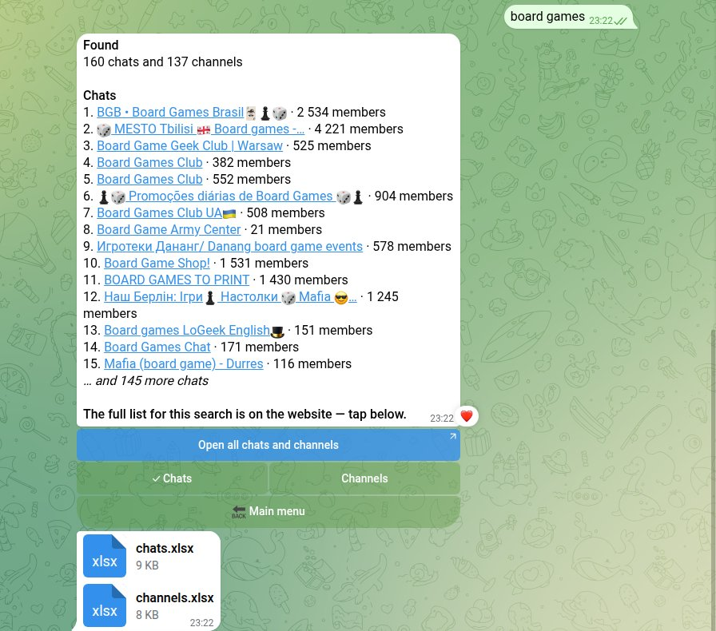
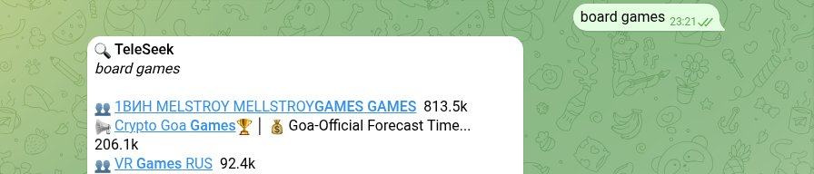
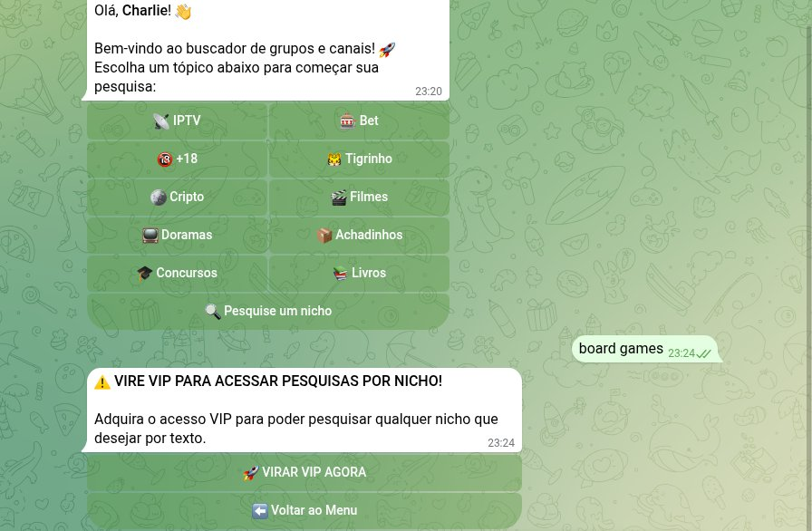

Telegram Group Finder Bots: 36 Tested, 21 Never Replied
Say you want a Telegram group about something ordinary: board games, a language, your city. Search for "telegram group finder bot" and you'll find dozens of bots that promise to search millions of chats for you. One says it covers three million chats, another eight million channels. I wanted to know what they actually send back when you ask for something as plain as board games.
So on 24 November 2026 I sent /start to 36 group and channel finder bots, and then the same two words, board games, to every one that answered. Eleven answered, and one of them found board-game groups. The search box at the top of Telegram's own chat list did better than all but one of them.
How finding groups on Telegram works
Only public groups and channels can be found by anyone. Telegram's FAQ describes a public group as one with a short link like t.me/publictestgroup, so that "anybody can view the group's entire chat history and join to post messages." The same FAQ says public names show up "in search under 'global results'". Private groups have no public link, and no bot or website can list them. If someone tells you a bot found a private group, it found an invite link that somebody posted publicly.
Telegram's own search already covers the first part. The method behind it, contacts.search, "returns users found by username substring", and public groups and channels come back in the same results. What Telegram charges for is searching inside posts. Its search documentation says global post searches across public channels "are paid: Premium users get a free amount of searches", and after that each search costs Telegram Stars. That gap, search by topic and inside posts without Premium, is what most of these bots sell.
How I tested
I wrote the rules down before the first search.
- Which bots. Every bot Telegram's global search returned for eight queries: group search, find groups, group finder, channel search, find channels, telegram search, search engine and groups finder. That gave 38 bots. Twenty-four say in their own name or description that they find Telegram groups or channels. I left out 14: four niche finders (K-pop channels or New York job groups, say), five tools that only look at your own chats or a channel's ranking, three that don't say what they search, a party game and a Viber bot.
- The web. I read the guides that come up first for telegram group finder bot and added every group or channel finder they recommend. That added 12 bots: one from AirDroid's Portuguese guide, two from AirDroid's list of the best search bots (one of them already on my list), and the ten group and channel finders in BotPenguin's "20 best Telegram search bots" roundup.
- What I did. One
/startin a private chat and a 15-second wait. Then one message, board games, to each bot that answered, picked before I'd read a single bot. In case board games was just an unlucky choice, I also fixed a second query in advance, learn english, for the bots that returned any list at all. I read the replies and the labels on the buttons. I didn't press a button, join a channel, pay or invite anyone. - Checking the results. For the first five groups or channels each bot returned, I asked Telegram what was behind the link without joining: does it exist, is it a group or a channel, how many members it has, and whether its own name or description is about board games.
- A control. The same board games query in Telegram's own search box, checked the same way.
- Pacing. At least 18 seconds between messages, and no more than 60 messages from the account in an evening.
- Predictions, written before the first message: at least 30% of the bots that answer will put a gate (a channel to join, invites or payment) in front of the search, and fewer than 60% of the results will be real groups about the topic.
What 36 bots did
Twenty-one never answered /start, even when I looked again two days later, and four no longer exist. All four that are gone are bots the web guides recommend: TelegramDB's @tgdb_bot, on AirDroid's list of the best Telegram search bots, and three from BotPenguin's roundup. Telegram now answers each of those usernames with "Nobody is using this username". Three of the silent ones, Bingram, Telegago and ExGram, belong to one network that promotes itself in all three descriptions. Their descriptions tell you to tap an "Open" button to search, and the bots themselves don't answer /start.
Here is what the 11 that answered sent back when I typed board games:
| What came back | Bots | Example |
|---|---|---|
| A list of board-game groups | 1 | find_groups_robot: 160 chats and 137 channels, first five all real |
| A list, but not of board games | 2 | Adult channels and a betting brand; shopping posts behind an ad |
| Pay or subscribe first | 2 | "Get VIP to search any niche"; join a Persian channel |
| "No results" | 1 | Plus a link to a channel called Feed the Python |
| Wanted a button, its Mini App or a channel link instead | 3 | "Choose the type of search", "Unknown command" |
| Went quiet after the first reply | 2 | Asked for a language, then said nothing |
| Telegram's own search (control) | – | 10 public chats, 9 about board games |
So one bot out of 36 found board-game groups. Of the 15 links I could check from the bots' answers, not counting the bots advertising their own channels, 14 led to something that exists, and only 5 were about board games. That's 33%, so my second prediction held. The first one didn't: only 2 of the 11 bots put a gate in front of the search. Most of them didn't need a gate, because they had nothing useful to hide behind it.

The one that works
@find_groups_robot (it calls itself Groups Find) answered board games with "Found 160 chats and 137 channels" and a numbered list of 15 groups with member counts, then "and 145 more chats". I checked the first five without joining. All five exist, all five are board-game groups (a Brazilian one, a Tbilisi games club, a Warsaw Board Game Geek group and two called Board Games Club), and the member counts it showed were within 30 of the real numbers. It also sent two spreadsheets I hadn't asked for, chats.xlsx and channels.xlsx, with the full lists.
Its profile also promises each group's activity, spam share and language. I only checked that the groups exist and match the topic.
The one that answered with adult channels
@TeleSeekSearch_bot says it searches "channels, groups and posts", and it did return a full page of ten results. None was about board games. Six were adult channels or groups, going by their names: hentai games, an OnlyFans board, adult classifieds and 18+ 3D models. One was a betting brand, one a crypto "forecast" channel, and two were video-game channels. The bot has an "🔞 Filter" button for adult content, and on a fresh start it let all six through.

Every one of the ten has "games" or "board" in its name, and none has both as a topic. If you type a two-word topic into this bot, expect the biggest channels that contain one of the words, whatever they're about.
The biggest one searched shopping posts
@osearchbot is the largest bot in the test, with 185,233 monthly users on its profile. Its reply to board games started with a line marked "[AD]" for a crypto news group. Then came posts from shopping-deal channels: a magnetic chess board, Hasbro's Clue, a ludo play mat. Of the five links I checked, one was the advertised crypto group and four were deal channels with between 8,054 and 204,205 subscribers. It searched posts that mention board games, which is useful if you want to buy one, and returned no groups about playing them.
Pay or subscribe first
@acheigrupos_bot is the bot AirDroid's Portuguese guide to finding Telegram groups recommends. Its welcome menu starts with IPTV, Bet, +18, Tigrinho, Cripto and Filmes. Tigrinho is the Brazilian nickname for Fortune Tiger, an online slot game. Typing my own search got "VIRE VIP PARA ACESSAR PESQUISAS POR NICHO!", which means "go VIP to search by niche", and a button to buy it.

@GroupSearchBot is the fourth pick in a "20 best Telegram search bots" roundup by BotPenguin, which says it "lets users to search a wide range of public Telegram groups using simple commands". The roundup's page now redirects to the company's homepage; I read it in the archived copy. When I pressed Start, the bot told me, in Persian, to join a channel called Fixupfa first. That's a "top tweets" channel with 42,614 subscribers, and it's the same channel a "who viewed my profile" bot sent me to a night earlier. When I typed board games anyway, it offered me a free AI chat and an image generator. It never searched for anything.
What the web guides recommend
The bots the guides recommend did worst of all. BotPenguin's roundup lists five group finders and five channel finders, each with a description and example commands. When I tried them on 24 November, three no longer exist (@GrouplerBot, @TGGroupBot and @channeldirectorybot), six didn't answer /start, and the one that did answer was GroupSearchBot, with its channel gate and AI menu. None of the ten searched for anything. Of the 12 bots that only the guides led me to, the two that answered at all were GroupSearchBot and acheigrupos, the one with the VIP paywall. The rest stayed silent for two days.
Telegram's own search did better
As a control, I typed board games into Telegram's own global search. It returned 10 public groups and channels, and 9 of them are about board games by their own name, from a 2,409-subscriber board-game channel to a 3,467-member group in Vladivostok. I checked the first five the same way as the bots' results, and all five are real. Two caveats: Telegram tailors these results to your account, and mine is registered on a Ukrainian number, so most of them were in Ukrainian or Russian. And it only finds groups with a public link, which is true of every bot here too.
A second query: learn english
Two words can trip a keyword search, so I sent the second query I'd fixed in advance, learn english, to the three bots that had returned lists. This time all three found the right kind of thing. TeleSeek's first five were English-learning channels and groups, BBC 6 Minute English among them. @find_groups_robot reported 1,268 chats and 3,683 channels and listed real English-learning groups; the first five have between 2,556 and 7,406 members. @osearchbot again opened with the same crypto ad, then gave three English-learning channels out of four. Telegram's own search returned 10 channels for the same words, all 10 about learning English. If you'd rather practise with a bot than join a group, I tested 83 English-learning bots too.
So the bots are only as good as the words you type. A phrase that channel owners put in their names, like "learn english", works almost anywhere. A topic with a common word in it, like "board games", brings up whatever is biggest that contains "games". Telegram's own search box was never worse than the best bot in either test.
What to do instead
- Start with Telegram's search box. Type the topic, scroll past your own chats to the global results, and open the groups. It's free, it has no ads, and in both of my tests it was at least as good as the best bot.
- If you want a list with member counts, use the one that worked.
@find_groups_robotwas the only bot that answered a plain topic with real groups about it. - Don't pay for "VIP search" and don't join a channel to unlock a search. In this test, neither led to a single group about the topic.
- Look at a group before you join. Telegram shows a public group's name, member count and recent messages before you press Join. A bot's description of a group is not the group.
- For private groups, ask for an invite link. No search can see them.
Questions
How do I find Telegram groups to join?
Type a topic into Telegram's search box and look at the global results. In my test of board games, 9 of the 10 public chats it returned were on topic. Only public groups with a link can be found that way, and that's also true of every group finder bot.
Do Telegram group finder bots work?
Only with the right words, in my test of 36 of them in November 2026. Eleven answered, 21 stayed silent for two days and four no longer exist. For board games, one bot, @find_groups_robot, returned real board-game groups. For learn english, all three bots that return lists found real English-learning groups, and so did Telegram's own search.
Are Telegram group search bots safe?
Pressing Start shows a bot your name and username, like any bot. The risk is in what they show you. One bot answered a search for board games with six adult channels, and one opens with buttons for betting, a casino slot and 18+ groups. Two wanted a channel subscription or payment before they would search.
Why can't I find a group in Telegram search?
It's probably private. Only groups with a public link show up, in Telegram's search and in every bot. If it is public, search for a word from its link or its name: of the 10 results Telegram gave me for board games, eight had the words in their link and two only in their title. Otherwise, ask a member for the link.
A game for the group you find
The free Party Game runs Truth or Dare, Never Have I Ever and Would You Rather as a Mini App inside Telegram. There's no VIP tier and no channel to join first.
Open the Party Game More bots I tested: Telegram bot directories.